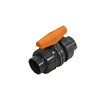

True Union Ball Valves
Harrington is a Supplier of high quality true union ball valves. We carry a wide range of brands, style options, connection types, materials, spec types and more. True union valves are commonly used in systems where you need to shut down a section / side of the valve, allowing maintenance, replacement or service to be performed. Material types include PVC, PVDF, Polypro, ABS, CPVC and more. Select your product to request a quote, get additional information and purchasing options.
 Asahi/America 2" CPVC Type 21 True Union Ball Valve, FKM O-rings, Socket/FPT Endsper EA · Sign in for price
Asahi/America 2" CPVC Type 21 True Union Ball Valve, FKM O-rings, Socket/FPT Endsper EA · Sign in for price 1/2" VALVE BALL TUBV METERING S PVC VIT TYPE 323per EA · Sign in for price
1/2" VALVE BALL TUBV METERING S PVC VIT TYPE 323per EA · Sign in for price
Georg Fischer 1/2" PVC Type 355 True Union Ball Valve, EPDM O-rings, FPT Endsper EA · Sign in for price- Georg Fischer 3/4" PVC Type 355 True Union Ball Valve, EPDM O-rings, FPT Endsper EA · Sign in for price
- Georg Fischer 1" PVC Type 355 True Union Ball Valve, EPDM O-rings, FPT Endsper EA · Sign in for price
- Georg Fischer 1-1/4" PVC Type 355 True Union Ball Valve, EPDM O-rings, FPT Connectionsper EA · Sign in for price
- Georg Fischer 1-1/2" PVC Type 355 True Union Ball Valve, EPDM O-rings, FPT Endsper EA · Sign in for price
- Georg Fischer 2" PVC Type 355 True Union Ball Valve, EPDM O-rings, FPT Endsper EA · Sign in for price
- Georg Fischer 1/2" PVC Type 355 True Union Ball Valve, EPDM O-rings, Socket Endsper EA · Sign in for price
- Georg Fischer 3/4" PVC Type 355 True Union Ball Valve, EPDM O-rings, Socket Endsper EA · Sign in for price
- Georg Fischer 1" PVC Type 355 True Union Ball Valve, EPDM O-rings, Socket Endsper EA · Sign in for price
- Georg Fischer 1-1/4" PVC Type 355 True Union Ball Valve, EPDM O-rings, Socket Endsper EA · Sign in for price
- Georg Fischer 1-1/2" PVC Type 355 True Union Ball Valve, EPDM O-rings, Socket Endsper EA · Sign in for price
 Georg Fischer 3/8" PVC Type 375 True Union Ball Valve, EPDM O-rings, Socket/FPT EndsCall for availabilityAsk a branch
Georg Fischer 3/8" PVC Type 375 True Union Ball Valve, EPDM O-rings, Socket/FPT EndsCall for availabilityAsk a branch- Georg Fischer 1/2" PVC Type 375 True Union Ball Valve, EPDM O-rings, Socket/FPT EndsCall for availabilityAsk a branch
- Georg Fischer 3/4" PVC Type 375 True Union Ball Valve, EPDM O-rings, Socket/FPT EndsCall for availabilityAsk a branch
- Georg Fischer 1" PVC Type 375 True Union Ball Valve, EPDM O-rings, Socket/FPT EndsCall for availabilityAsk a branch
- Georg Fischer 1-1/4" PVC Type 375 True Union Ball Valve, EPDM O-rings, Socket/FPT EndsCall for availabilityAsk a branch
- Georg Fischer 1-1/2" PVC Type 375 True Union Ball Valve, EPDM O-rings, Socket/FPT EndsCall for availabilityAsk a branch
- Georg Fischer 2" PVC Type 375 True Union Ball Valve, EPDM O-rings, Socket/FPT EndsCall for availabilityAsk a branch
- Georg Fischer 2-1/2" PVC Type 375 True Union Ball Valve, EPDM O-rings, Socket EndsCall for availabilityAsk a branch
- Georg Fischer 3" PVC Type 375 True Union Ball Valve, EPDM O-rings, Socket EndsCall for availabilityAsk a branch
- Georg Fischer 4" PVC Type 375 True Union Ball Valve, EPDM O-rings, Socket EndsCall for availabilityAsk a branch
- Georg Fischer 3/8" PVC Type 375 True Union Ball Valve, FPM O-rings, Socket/FPT EndsCall for availabilityAsk a branch
- Georg Fischer 1/2" PVC Type 375 True Union Ball Valve, FPM O-rings, Socket/FPT EndsCall for availabilityAsk a branch
- Georg Fischer 3/4" PVC Type 375 True Union Ball Valve, FPM O-rings, Socket/FPT EndsCall for availabilityAsk a branch
- Georg Fischer 1" PVC Type 375 True Union Ball Valve, FPM O-rings, Socket/FPT EndsCall for availabilityAsk a branch
- Georg Fischer 1-1/4" PVC Type 375 True Union Ball Valve, FPM O-rings, Socket/FPT EndsCall for availabilityAsk a branch
- Georg Fischer 1-1/2" PVC Type 375 True Union Ball Valve, FPM O-rings, Socket/FPT EndsCall for availabilityAsk a branch
- Georg Fischer 2" PVC Type 375 True Union Ball Valve, FPM O-rings, Socket/FPT EndsCall for availabilityAsk a branch
- Georg Fischer 2-1/2" PVC Type 375 True Union Ball Valve, FPM O-rings, Socket EndsCall for availabilityAsk a branch
- Georg Fischer 3" PVC Type 375 True Union Ball Valve, FPM O-rings, Socket EndsCall for availabilityAsk a branch
- Georg Fischer 4" PVC Type 375 True Union Ball Valve, FPM O-rings, Socket EndsCall for availabilityAsk a branch
- Georg Fischer 1/2" PVC Type 375 True Union Ball Valve, EPDM O-rings, Flange EndsCall for availabilityAsk a branch
- Georg Fischer 3/4" PVC Type 375 True Union Ball Valve, EPDM O-rings, Flange EndsCall for availabilityAsk a branch
- Georg Fischer 1" PVC Type 375 True Union Ball Valve, EPDM O-rings, Flange EndsCall for availabilityAsk a branch
- Georg Fischer 1-1/4" PVC Type 375 True Union Ball Valve, EPDM O-rings, Flange EndsCall for availabilityAsk a branch
- Georg Fischer 1-1/2" PVC Type 375 True Union Ball Valve, EPDM O-rings, Flange EndsCall for availabilityAsk a branch
- Georg Fischer 2" PVC Type 375 True Union Ball Valve, EPDM O-rings, Flange EndsCall for availabilityAsk a branch
- Georg Fischer 3" PVC Type 375 True Union Ball Valve, EPDM O-rings, Flange EndsCall for availabilityAsk a branch